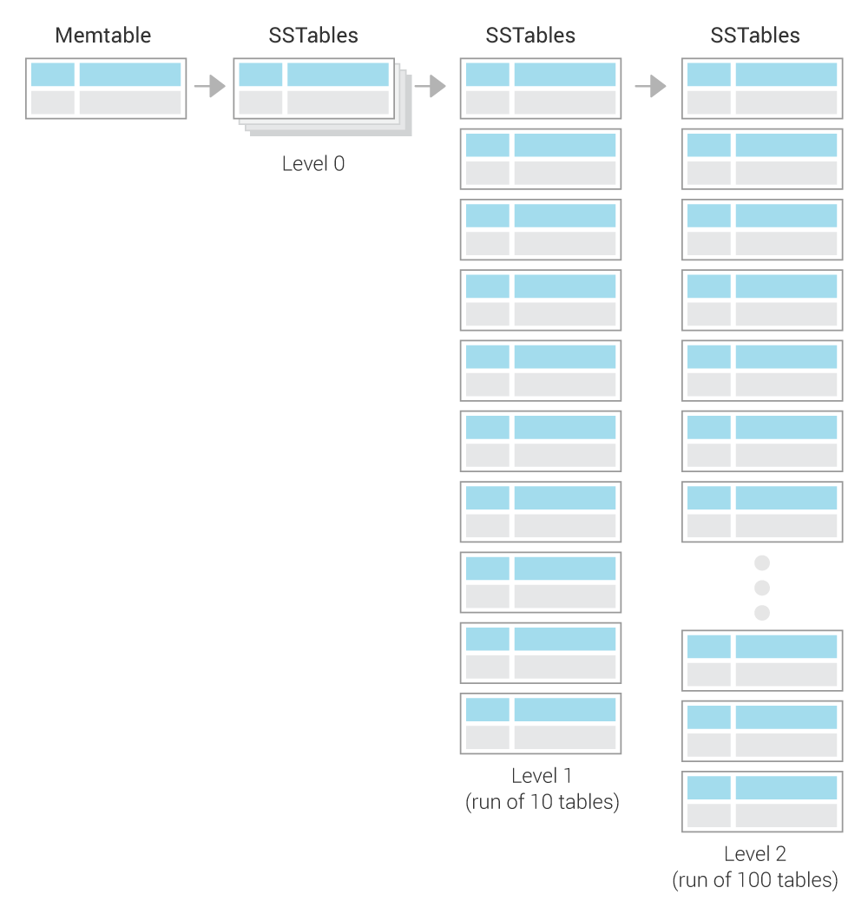

Was this page helpful?
Caution
You're viewing documentation for a previous version. Switch to the latest stable version.
Compaction¶
This document gives a high level overview of Compaction, focusing on what compaction is, and how it works. There is a different document that covers the CQL syntax for setting a compaction strategy. There is also another document, Compaction Strategy Matrix, that covers how to decide which strategy works best.
How Scylla Writes Data¶
Scylla’s write path follows the well-known Log Structured Merge (LSM) design for efficient writes that are immediately available for reads. Scylla is not the first project to use this method. Popular projects to use this method include Lucene Search Engine, Google BigTable, and Apache Cassandra.
Scylla writes its updates to a memory table (MemTable), and when that becomes too big, it is flushed to a new file. This file is sorted to make it easy to search and later merge. This is why the tables are known as Sorted String Tables or SSTables.
In time, two major problems start to appear. First, data in one SSTable which is later modified or deleted in another SSTable wastes space as both tables are present in the system. Second, when data is split across many SSTables, read requests are processed slower as many SSTables need to be read. Scylla mitigates the second problem by using a bloom filter and other techniques to avoid reading from SSTables that do not include the desired partition. However, as the number of SSTables grows, inevitably so do the number of disk blocks from which we need to read on every read query. For these reasons, as soon as enough SSTables have accumulated, Scylla performs a compaction.
Compaction Overview¶
Compaction merges several SSTables into new SSTable(s) which contain(s) only the live data from the input SSTables. Merging several sorted files to get a sorted result is an efficient process, and this is the main reason why SSTables are kept sorted.
There are two types of compactions:
- Minor Compaction
Scylla automatically triggers a compaction of some SSTables, according to a compaction strategy (as described below). This is the recommended method.
- Major Compaction
A user triggers (using nodetool) a compaction over all SSTables, merging the individual tables according to the selected compaction strategy.
Caution
It is always best to allow Scylla to automatically run minor compactions. Major compactions can exhaust resources, increase operational costs, and take up valuable disk space. This requires you to have 50% more disk space than your data unless you are using Incremental compaction strategy (ICS).
View Compaction Statistics¶
Scylla has tools you can use to see the status of your compactions. These include nodetool (compactionhistory and compactionstats) and the Grafana dashboards which are part of the Scylla Monitoring Stack which display the compaction statistics on a per cluster and per node basis. Compaction errors can be seen in the logs.
Compaction strategy¶
A compaction strategy is what determines which of the SSTables will be compacted, and when. The following compaction strategies are available and are described in greater detail below. For a matrix which compares each strategy to its workload, refer to Compaction Strategy Matrix
Size-tiered compaction strategy (STCS) - (default setting) triggered when the system has enough similarly sized SSTables.
Leveled compaction strategy (LCS) - the system uses small, fixed-size (by default 160 MB) SSTables divided into different levels and lowers both Read and Space Amplification.
Incremental compaction strategy (ICS) - ScyllaDB Enterprise Uses runs of sorted, fixed size (by default 1 GB) SSTables in a similar way that LCS does, organized into size-tiers, similar to STCS size-tiers. If you are an Enterprise customer ICS is an updated strategy meant to replace STCS. It has the same read and write amplification, but has lower space amplification due to the reduction of temporary space overhead is reduced to a constant manageable level.
Time-window compaction strategy (TWCS) - designed for time series data and puts data in time order. TWCS uses STCS to prevent accumulating SSTables in a window not yet closed. When the window closes, TWCS works towards reducing the SSTables in a time window to one.
How to Set a Compaction Strategy¶
Compaction strategies are set as part of the CREATE or ALTER statement when creating or altering tables. Refer to the CQL syntax for details.
Caution
Changing the parameters for compaction strategies or changing from one strategy to another (using the ALTER statement) can create issues. See Changing Compaction Strategies or Properties for more information.
Size-tiered Compaction Strategy (STCS)¶
The premise of SizeTieredCompactionStrategy (STCS) is to merge SSTables of approximately the same size.
All SSTables are put into different buckets depending on their size.
An SSTable is added to an existing bucket if size of the SSTable is within the parameters: bucket_low and bucket_high, which is based on calculating the current average size of the SSTables already in the bucket.
This will create several buckets and when the threshold number of tables(min_threshold) within a bucket is reached, the tables in that bucket are compacted.
Following the compaction, the tables are merged, resulting in one larger SSTable. As time progresses and several large SSTables have accumulated, they will be merged to form one even-larger SSTable and so on.
This means that the system has several size tiers/buckets (small SSTables, large SSTables, even-larger SSTables) and in each tier, there is roughly the same number of SSTables. When one tier is full (the threshold has been reached), the system merges all its tables to create one SSTable which falls roughly into the next size tier.
Leveled Compaction Strategy (LCS)¶
Leveled Compaction uses small, fixed-size (by default 160 MB) SSTables divided into different levels. Each level represents a run of a number of SSTables.
A run of SSTables¶
A run is a log-structured-merge (LSM) term for a large SSTable split into several smaller SSTables. In other words, a run is a collection of SSTables with non-overlapping key ranges. The benefit of a run is that when a compaction is done, only parts of it (small individual SSTables) are compacted and deleted. Following a compaction, SSTables are smaller and there is no need to compact a huge SSTable all at once.
The compaction method works as follows:
New SSTables (created from MemTables) are created in Level 0. All other levels are each a run of SSTables, of exponentially increasing size as follows:
Level 1 is a run of 10 SSTables (160 MB each table * 10)
Level 2 is a run of 100 SSTables (160 MB each table * 100), etc.
When there are 4 SSTables in Level 0, they are compacted with the 10 SSTables in Level 1. This compaction works as follows:
Read in parallel 4 SSTables in level 0 and 10 in Level 1.
Write new SSTables for Level 1 (replacing the 10 old tables which were compacted).
Instead of creating one large SSTable, several SSTables are written as follows: One SSTable is created. When it reaches the size limit (160 MB), a new table starts. As the data is merged on the sorted keys, this generates a run (see A run of SSTables), with non-overlapping key ranges.
If after the compaction from Level 0 into Level 1, if there are at least 10 SSTables in Level 1, the excess SSTables from Level 1 are compacted and put into Level 2 as follows:
Take one SSTable from Level 1 (this SSTable will be deleted after the compaction)
Look at this SSTable’s key range, and find all SSTables in Level 2 which overlap with it. Typically, there are about 12 of these (the Level 1 SSTable spans roughly 1/10th of the keys, while each Level 2 SSTable spans roughly 1/100th of the keys, so 10 Level 2 SSTables will overlap the Level 1 SSTable’s range, plus two more on the edges).
As before, compact the 1 SSTable from Level 1 and the 12 SSTables from Level 2 and create new SSTables in Level 2 (and delete the 1+12 original SSTables).
If after this compaction of Level 1 into Level 2, there are excess SSTables in Level 2 (as Level 2 can only take 100 tables), merge them into Level 3.
Temporary Fallback to STCS¶
When new data is written very quickly, the Leveled Compaction strategy may be temporarily unable to keep up with the demand. This can result in an accumulation of a large number of SSTables in L0 which in turn create very slow reads as all read requests read from all SSTables in L0. So as an emergency measure, when the number of SSTables in L0 grows to 32, LCS falls back to STCS to quickly reduce the number of SSTables in L0. Eventually, LCS will move this data again to fixed-sized SSTables in higher levels.
Likewise, when bootstrapping a new node, SSTables are streamed from other nodes. The level of the remote SSTable is kept to avoid many compactions until after the bootstrap is done. During the bootstrap, the new node receives regular write requests while it is streaming the data from the remote node. Just like any other write, these writes are flushed to L0. If Scylla did an LCS compaction on these L0 SSTables and created SSTables in higher level, this could have blocked the remote SSTables from going to the correct level (remember that SSTables in a run must not have overlapping key ranges). To remedy this from happening, Scylla compacts the tables using STCS only in L0 until the bootstrap process is complete. Once done, all resumes as normal under LCS.
Incremental Compaction Strategy (ICS) ScyllaDB Enterprise¶
ICS is only available in ScyllaDB Enterprise. See the ScyllaDB Enetrpise documentation for details.
Time-window Compaction Strategy (TWCS)¶
Time-Window Compaction Strategy is designed for handling time series workloads. It compacts SSTables within each time window using Size-tiered Compaction Strategy (STCS). SSTables from different time windows are never compacted together.
Caution
We strongly recommend using a single TTL value for any given table.
This means sticking to the default time to live as specified in the table’s schema.
Using multiple TTL values for a given table may lead to inefficiency when purging expired data, because an SSTable will remain until all of its data is expired.
Tombstone compaction can be enabled to remove data from partially expired SSTables, but this creates additional WA (write amplification).
Caution
Avoid overwriting data and deleting data explicitly at all costs, as this can potentially block an expired SSTable from being purged, due to the checks that are performed to avoid data resurrection.
The strategy works as follows:
A time window is configured. The window is determined by the compaction window size compaction_window_size and the time unit (compaction_window_unit).
SSTables created within the time window are compacted using Size-tiered Compaction Strategy (STCS).
Once a time window ends, take all SSTables which were created during the time window and compact the data into one SSTable.
The final resulting SSTable is never compacted with other time-windows’ SSTables.
With this explanation, if the time window was for one day, at the end of the day, the SSTables accumulated for that day only would be compacted into one SSTable.
When time-series data gets out of order¶
The primary motivation for TWCS is to separate data on disk by timestamp and to allow fully expired SSTables to drop more efficiently. This efficiency stops when data is written to SSTables out of order, with new data and old data in the same SSTable. Out of order data can appear in the same SSTable in two ways:
If the user mixes old data and new data in the traditional write path, the data is commingled in the MemTables and flushed into the same SSTable, where it will remain commingled.
If the user’s read requests for old data causes read repairs that pull the old data into the current MemTable. The data is commingled in the MemTables and flushed into the same SSTable, where it will remain commingled.
While TWCS tries to minimize the impact of commingled data, users should attempt to avoid this behavior. Specifically, users should avoid queries that explicitly set the timestamp. It is recommended to run frequent repairs (which streams data in such a way that it does not become commingled), and disable background read repair by setting the table’s read_repair_chance and dclocal_read_repair_chance to 0.
Changing Compaction Strategies or Properties¶
Changing the Threshold in LCS¶
There can be cases where, following a compaction, tables are created in a level which are not compacted for a considerable amount of time.
For example, a user has tables which are using LCS. There are 5 levels of tables at present and the SSTable_size_in_mb is 5MB. The user changes this threshold to 160MB. Following this change, there is only enough data to actually get an L3 on the same node. The data in the SSTables in L4 will get starved and will not get compacted. To avoid this, LCS tries to include those starved high level SSTables in future compactions. If after been 25 compaction rounds, a level was not compacted, it is brought in to the next compaction.
Changing to Time Window Compaction Strategy (TWCS)¶
If you want to enable TWCS on existing data, you may consider running a major compaction first, placing all existing data into a single (old) window. Subsequent newer writes will then create typical SSTables as expected.
Changing the Time Window in TWCS¶
If you want to change the time window you can do so, but keep in mind that this change may trigger additional compactions as adjacent windows are joined together. If the window size is decreased (for example, from 24 hours to 12 hours), then the existing SSTables will not be modified. Note as well that TWCS can not split existing SSTables into multiple windows.
Which Strategy is best to use¶
Use the table in Which strategy is best to determine the right strategy for your needs.